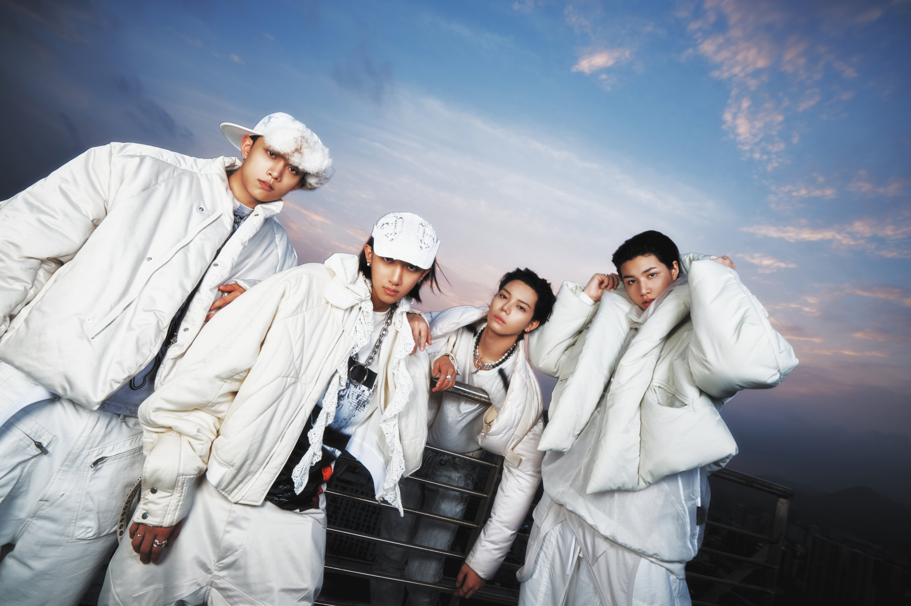

Intip konsep visual dan deretan lagu seru yang dipersiapkan Ohyul, Ryul, Woojin, dan Louis untuk para fans. Menjelang comeback yang dijadwalkan pada bulan November, LNGSHOT melepas rangkaian konten secara bertahap sebelum merilis EP ketiga mereka yaitu S.W.I.S.H.

Countdown dibuka lewat trailer comeback. Judul EP ini adalah singkatan dari “Swag With Integrity Shapes History”. Setelahnya, grup merilis foto konsep grup dan individu. Gaya serba putih dipilih untuk menonjolkan karakter tiap member sekaligus kesan kekompakan.
Episode pertama dokumenter S.W.I.S.H. tayang di kanal YouTube resmi pada 15 Oktober dan menunjukkan perjalanan mereka sebagai artis. Para member menekankan bahwa ketulusan adalah kuncinya, sebab tanpa itu semuanya hanya akan jadi sekadar “pose”. Mereka juga membandingkannya dengan album debut SHOT CALLERS, yang menurut mereka menunjukkan siapa diri mereka.
Pada 21 Oktober, LNGSHOT merilis lagu pra-rilis “Masterpiece” dengan video musik yang menampilkan aktris Jepang Miyoshi Ayaka. Setelah itu, mereka membagikan medley highlight lima lagu: “Masterpiece”, “Bananas”, “Wanna Go”, “Up & Away”, dan “Beep Beep”. Tiap potongan memperlihatkan arah musik yang berbeda-beda di dalam EP. Jay Park dan sejumlah musisi lain ikut berkontribusi dalam proyek ini.